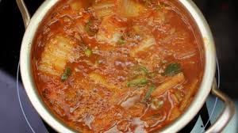

보통 김치찌개를 끓일때 고기를 먼저 볶아주었는데요. 백선생 백종원님은 고기를 물에 넣고 끓여서 육수를 내는게 비법이라고 하네요!! 일반물보단 쌀뜨물이 더욱 좋고요.
육수를 만드는 동안, 김치도 썰고 양파와 홍고추, 대파도 썰어서 준비했어요!! 김치와 고기에 비율은 보통 3:1 정도가 적당하다고 하네요. 양파는 단맛을 위해서, 홍고추와 대파는 장식용이라고 하네요.
고기가 익고, 육수가 나올때 쯤 (여기서 생기는 거품은 걷지 말고 오래 끓여서 없어질때까지 기다리라고 하네요)
김치를 넣어주세요.
조금 더 끓이다 양파도 넣고요, 김치찌개는 오래 끓일수록 맛있다고 하네요.
고춧가루, 다진마늘, 생강 조금을 넣고요. 간은 국간장과 새우젓으로 한다고 하네요. 저두 생강만 빼고 똑같이 했어요. 그리고 여기서 된장을 조금만 넣어주시면 감칠맛이 난다고 하네요.
마지막엔 대파와 홍고추를 넣으면 완성이랍니다. 저는 두부도 넣어주었어요.

맛있는 김치찌게